Checking PRO360° Remote Diagnostics Connectivity with Technical Support
Parts and Materials Required
- Panther System PC Workstation
Time Required
- 20 minutes
Procedure
 Launch the Panther System main assay software and log in as an Admin User.
Launch the Panther System main assay software and log in as an Admin User.
- Confirm that the Panther System is not in Assay Procedures required to prepare and perform a specific test. In the context of this document, assay refers exclusively to a Hologic test, such as Aptima Combo or Ultrio. Processing mode.
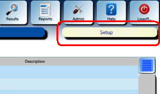

Note—If the Panther System is in Assay Processing mode, wait until the system enters any state other than Assay Processing before proceeding. - On the FSE laptop, click the PRO360° desktop icon to open a new session.
- Create a Session Code:
- Click Session Assignment.
- Enter the Panther System Serial Number in the Customer Code field.
- Click Create Code.
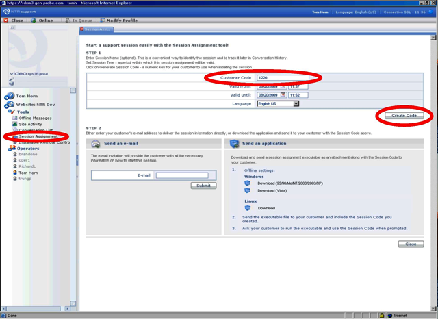
A Session Code appears on the screen.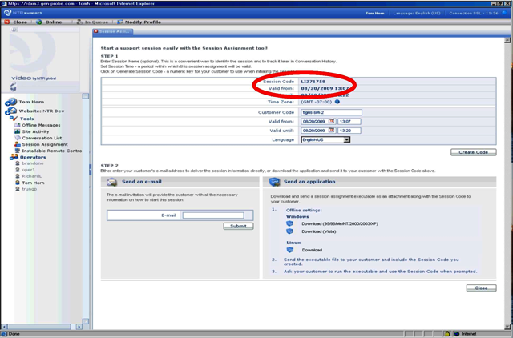
- On the Panther System, navigate to the Messages tab and click the button at the bottom of button.
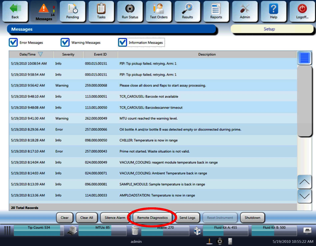
A Remote Diagnostics Management dialog box appears.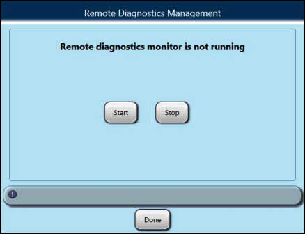
- Press Start.A PRO360° popup window appears.
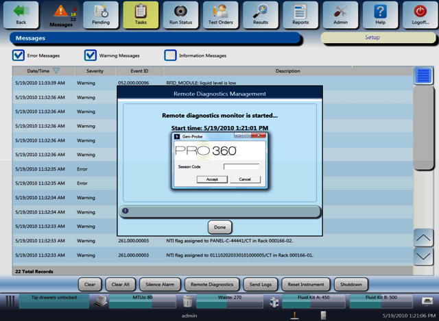
- Enter the newly generated Session Code and select Accept.
Note—If an incorrect Session Code is entered, a warning will appear, indicating "session not found," followed by a prompt to enter a correct Session Code. At this point you can access the Panther System through the FSE laptop.
- Ensure that the File Transfer Control checkbox under Advanced Settings is checked (it is checked by default).You can now control over the Panther System and can navigate to different screens.
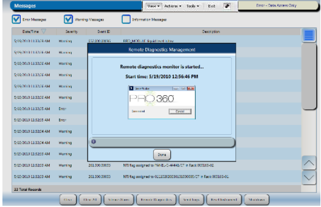
- Click the Tools button to access the File Transfer on the drop-down menu.
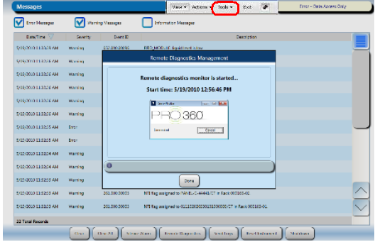
A File Explorer screen appears.
- Transfer log files from the Panther System C: drive to a folder on the FSE laptop.
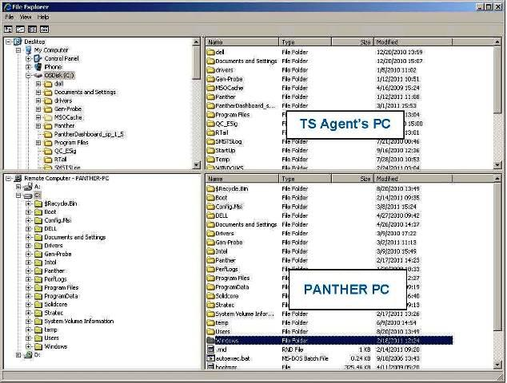
A File Transfer popup window indicates the progress of the transfer.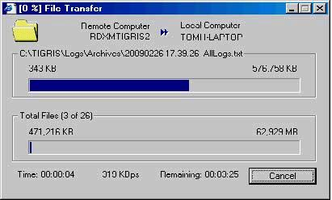
When the transfer is complete, the transferred file appears in the FSE laptop directory.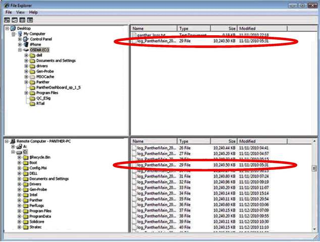
- To terminate the session, either close the PRO360° Remote Diagnostics application on the FSE laptop or select Cancel in the PRO360° popup window.
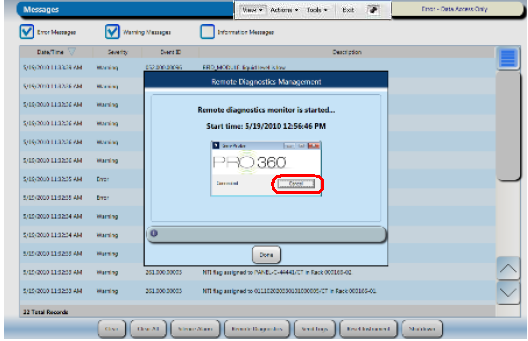

 button at the top of the page to send feedback, comments, or change requests.
button at the top of the page to send feedback, comments, or change requests.